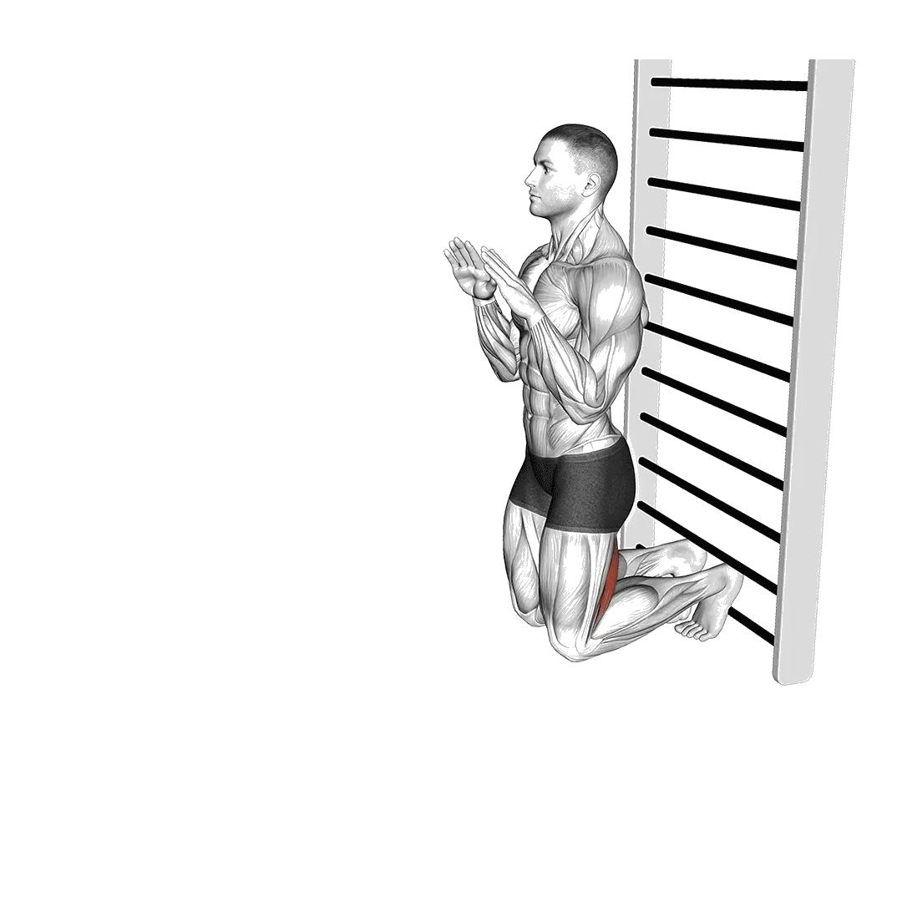

Nordic Hamstring Curl
Nordic Hamstring Curl ist eine Übung für den Bereich Beine mit Schwerpunkt auf Hamstrings. Durchschnittliche Wiederholungen und Wiederholungsstandards findest du auf einer Seite.

Durchschnittliche Wiederholungen: Mittelstufe
Richtwert für eine Person auf mittlerem Niveau.
Nordic Hamstring Curl: Durchschnittliche Wiederholungen
| Level | ||
|---|---|---|
| Einsteiger | < 1 | < 1 |
| Anfänger | 3 | < 1 |
| Fortgeschrittene | 15 | 11 |
| Erfahrene | 32 | 27 |
| Elite | 49 | 74 |
Hinweis: Diese Werte sind Schätzungen für durchschnittliche Wiederholungen in einem Satz. Körpergewicht, Bewegungsumfang, Tempo und andere persönliche Faktoren können die Leistung beeinflussen. Die detaillierten Daten stehen in der Tabelle unten.
Dein aktueller Stand
Level für Nordic Hamstring Curl prüfen
Vergleiche Wiederholungen pro Satz mit dem Körpergewichtsstandard.
Die Schätzung ist ein Richtwert. Technik, Bewegungsumfang und Ermüdung verändern das Ergebnis. Methode ansehen
Nordic Hamstring Curl: Wiederholungsstandards
Männer nach Körpergewicht (kg) [Wiederholungen]
| Körpergewicht | Einsteiger | Anfänger | Fortgeschrittene | Erfahrene | Elite |
|---|---|---|---|---|---|
| 50 | < 1 | < 1 | 11 | 28 | 49 |
| 55 | < 1 | < 1 | 11 | 28 | 47 |
| 60 | < 1 | < 1 | 11 | 27 | 46 |
| 65 | < 1 | < 1 | 11 | 27 | 44 |
| 70 | < 1 | < 1 | 11 | 26 | 43 |
| 75 | < 1 | < 1 | 11 | 25 | 41 |
| 80 | < 1 | < 1 | 11 | 24 | 40 |
| 85 | < 1 | < 1 | 10 | 24 | 38 |
| 90 | < 1 | < 1 | 10 | 23 | 37 |
| 95 | < 1 | < 1 | 10 | 22 | 36 |
| 100 | < 1 | < 1 | 10 | 21 | 35 |
| 105 | < 1 | < 1 | 9 | 21 | 33 |
| 110 | < 1 | < 1 | 9 | 20 | 32 |
| 115 | < 1 | < 1 | 9 | 19 | 31 |
| 120 | < 1 | < 1 | 9 | 19 | 30 |
| 125 | < 1 | < 1 | 8 | 18 | 29 |
| 130 | < 1 | < 1 | 8 | 17 | 28 |
| 135 | < 1 | < 1 | 8 | 17 | 27 |
| 140 | < 1 | < 1 | 7 | 16 | 26 |
Männer nach Alter [Wiederholungen]
| Alter | Einsteiger | Anfänger | Fortgeschrittene | Erfahrene | Elite |
|---|---|---|---|---|---|
| 15 | < 1 | < 1 | 6 | 18 | 33 |
| 20 | < 1 | < 1 | 10 | 25 | 42 |
| 25 | < 1 | < 1 | 11 | 27 | 44 |
| 30 | < 1 | < 1 | 11 | 27 | 44 |
| 35 | < 1 | < 1 | 11 | 27 | 44 |
| 40 | < 1 | < 1 | 11 | 27 | 44 |
| 45 | < 1 | < 1 | 9 | 24 | 40 |
| 50 | < 1 | < 1 | 7 | 20 | 36 |
| 55 | < 1 | < 1 | 5 | 17 | 31 |
| 60 | < 1 | < 1 | 2 | 13 | 26 |
| 65 | < 1 | < 1 | < 1 | 9 | 21 |
| 70 | < 1 | < 1 | < 1 | 6 | 15 |
| 75 | < 1 | < 1 | < 1 | 2 | 11 |
| 80 | < 1 | < 1 | < 1 | < 1 | 7 |
| 85 | < 1 | < 1 | < 1 | < 1 | 4 |
| 90 | < 1 | < 1 | < 1 | < 1 | < 1 |
Frauen nach Körpergewicht (kg) [Wiederholungen]
| Körpergewicht | Einsteiger | Anfänger | Fortgeschrittene | Erfahrene | Elite |
|---|---|---|---|---|---|
| 40 | < 1 | 2 | 16 | 34 | 54 |
| 45 | < 1 | 3 | 16 | 33 | 52 |
| 50 | < 1 | 4 | 16 | 32 | 50 |
| 55 | < 1 | 4 | 16 | 31 | 48 |
| 60 | < 1 | 4 | 16 | 30 | 46 |
| 65 | < 1 | 4 | 15 | 29 | 44 |
| 70 | < 1 | 4 | 15 | 28 | 42 |
| 75 | < 1 | 4 | 14 | 27 | 41 |
| 80 | < 1 | 4 | 14 | 26 | 39 |
| 85 | < 1 | 4 | 13 | 25 | 37 |
| 90 | < 1 | 4 | 12 | 24 | 36 |
| 95 | < 1 | 3 | 12 | 23 | 34 |
| 100 | < 1 | 3 | 11 | 22 | 33 |
| 105 | < 1 | 3 | 11 | 21 | 32 |
| 110 | < 1 | 3 | 10 | 20 | 31 |
| 115 | < 1 | 2 | 10 | 19 | 30 |
| 120 | < 1 | 2 | 10 | 19 | 28 |
Frauen nach Alter [Wiederholungen]
| Alter | Einsteiger | Anfänger | Fortgeschrittene | Erfahrene | Elite |
|---|---|---|---|---|---|
| 15 | < 1 | < 1 | 9 | 22 | 37 |
| 20 | < 1 | 2 | 14 | 30 | 47 |
| 25 | < 1 | 3 | 15 | 32 | 49 |
| 30 | < 1 | 3 | 15 | 32 | 49 |
| 35 | < 1 | 3 | 15 | 32 | 49 |
| 40 | < 1 | 3 | 15 | 32 | 49 |
| 45 | < 1 | 1 | 13 | 28 | 45 |
| 50 | < 1 | < 1 | 11 | 25 | 41 |
| 55 | < 1 | < 1 | 8 | 21 | 35 |
| 60 | < 1 | < 1 | 6 | 16 | 30 |
| 65 | < 1 | < 1 | 2 | 12 | 24 |
| 70 | < 1 | < 1 | < 1 | 8 | 18 |
| 75 | < 1 | < 1 | < 1 | 5 | 13 |
| 80 | < 1 | < 1 | < 1 | 1 | 9 |
| 85 | < 1 | < 1 | < 1 | < 1 | 6 |
| 90 | < 1 | < 1 | < 1 | < 1 | 3 |
Hinweis: Die Tabellenwerte sind Richtwerte für Wiederholungen, die in einem Satz möglich sind. Die Daten nach Körpergewicht helfen beim Einschätzen der relativen Belastung, die Daten nach Alter zeigen Trends.
Zielmuskulatur
| Gruppe | Muskeln |
|---|---|
| Zielmuskulatur | Hamstrings |
| Sekundäre Muskeln | Gluteus maximus, Rückenstrecker |
| Stabilisatoren | Gerader Bauchmuskel, Äußere schräge Bauchmuskeln |
| Griff | Keine |
Tracking und Analyse in der Shiba App
Gewichte, Wiederholungen und Fortschritt an einem Ort.
Tabellenhinweise
| Level | Beschreibung | Verteilung |
|---|---|---|
| Einsteiger | Beherrscht die saubere Technik und trainiert seit mindestens 1 Monat regelmäßig. | Untere 5% |
| Anfänger | Trainiert seit mindestens 6 Monaten regelmäßig. | Top 80% |
| Fortgeschrittene | Trainiert seit mindestens 2 Jahren regelmäßig. | Top 50% |
| Erfahrene | Trainiert seit mehr als 5 Jahren regelmäßig. | Top 20% |
| Elite | Trainiert diese Übung seit mehr als 5 Jahren gezielt. | Top 5% |